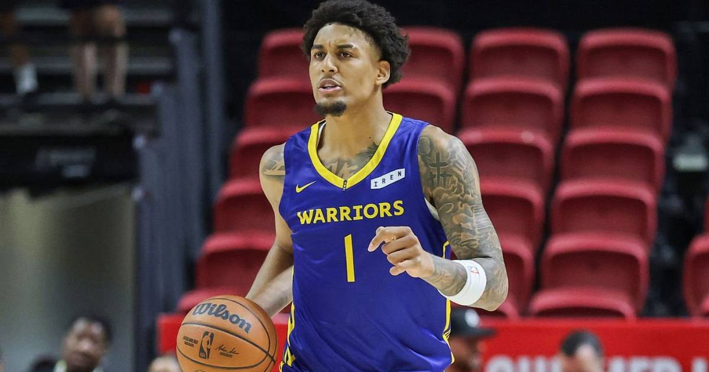

Warriors Get Their First Win: Lendeborg's Career-High 31 and Curry's Perfect Night Rout Denver
Rookie Yaxel Lendeborg scored a career-high 31 points and Stephen Curry went a perfect 8-for-8 from the field as Golden State beat Denver 134-114 for its first win of the season.

Disclosure: this post contains affiliate links. I earn a commission on qualifying purchases.
The result
Final: Golden State Warriors 134, Denver Nuggets 114.
The winless Warriors are winless no more. Golden State rolled into Ball Arena and blew out Denver behind a career night from a rookie and a perfect night from a legend.
Lendeborg announces himself
Rookie Yaxel Lendeborg, the No. 11 pick in the 2026 draft, scored a career-high 31 points with 12 rebounds, going 12-of-13 from the free-throw line. He came in averaging 21.8 points through his first four career games — and this was his loudest one yet.
Curry doesn't miss
Stephen Curry hit all eight of his field-goal attempts — three of them threes — plus all five free throws, scoring 17 of his 24 points in the third quarter. Brandin Podziemski added 18, Gui Santos 13 and Al Horford 11 as Golden State hit 22 threes.
Denver's night
DeMar DeRozan led Denver with 21 points, Nikola Jokic finished with 19 points and 11 assists, and Jamal Murray had 19 points. The Nuggets played the final 8:34 without Aaron Gordon, ejected after two technicals, and never got closer than 13 in the fourth.
Why it matters
• Golden State's first win of the season comes on the road, against a Denver team that had just rallied from 23 down two nights earlier.
• Lendeborg's 31-12 line is the latest data point in a rookie season that's already turning heads.
• Curry's perfect shooting night is the kind of line that only ever seems to belong to him.
Sources: Stephen Curry's perfect shooting night lifts Warriors over Nuggets (Deadspin); Yaxel Lendeborg scores career-high 31 points in Warriors first win (USA Today).
Gear up: Fanatics